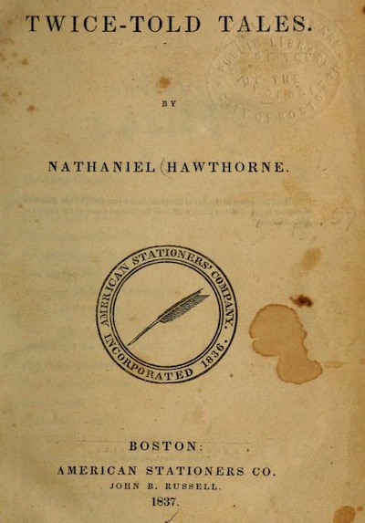

In his review, Poe also defended the short story “as Mr. Hawthorne has here exemplified it” as the perfect genre to stir readers’ emotions:
In the brief tale the author is enabled to carry out the fullness of his intention, be it what it may. During the hour of perusal the soul of the reader is at the writer’s control. There are no external or extrinsic influences — resulting from weariness or interruption.
And Poe saw and celebrated something new in Hawthorne:
Mr. Hawthorne’s distinctive trait is invention, creation, imagination, originality — a trait which, in the literature of fiction, is positively worth all the rest.
Poised between Longfellow’s and Poe’s approaches to writing, Hawthorne provided a mirror in which each saw his own image reflected. Where Longfellow saw serenity and friendliness in Hawthorne, Poe saw an edgy and effective tone, something moving and wild, and a determination to be original. The varied editions of Longfellow’s work—some luxurious, some meant for domestic sharing, recitation, or quotation—and the insistence of Boston’s literati that their favorite poet’s work would never die in the end demonstrate only that Longfellow was popular in his time.
Valuing mystery over faith, effect over argument, surprise over reassurance, innovation over conformity, and edginess over predictability, Poe was in the ideal position to see why Hawthorne’s (and his own) work would survive their time while Longfellow’s fame would not endure.
Both Longfellow (in 1837) and Poe (in 1842) reviewed Hawthorne’s Twice-Told Tales. Their different takes help us understand how Poe arrived at his accurate prediction about Longfellow’s place in the future.
In his 1837 (unsigned) review of Nathaniel Hawthorne’s first collection of short stories, Longfellow described his fellow Bowdoin College alumnus as an upbeat, Romantic visionary:
The book, though in prose, is written nevertheless by a poet. He looks upon all things in the spirit of love, and with lively sympathies. . . . The true poet is a friendly man. . . . To his eye all things are beautiful and holy.
Calling it a “sweet, sweet book,” Longfellow emphasized “its vein of pleasant philosophy, and the quiet humor.” Poe saw and celebrated a less sunny side to these short stories. In his review of the 1842 edition of Twice-Told Tales, Poe observed that the “tone is singularly effective—wild, plaintive, thoughtful, and in full accordance with his themes.” These contrasting reviews provide clues to why Poe’s reputation has risen along with Hawthorne’s while Longfellow’s has declined over the past 100 years.
In his review, Poe also defended the short story “as Mr. Hawthorne has here exemplified it” as the perfect genre to stir readers’ emotions:
In the brief tale the author is enabled to carry out the fullness of his intention, be it what it may. During the hour of perusal the soul of the reader is at the writer’s control. There are no external or extrinsic influences — resulting from weariness or interruption.
And Poe saw and celebrated something new in Hawthorne:
Mr. Hawthorne’s distinctive trait is invention, creation, imagination, originality — a trait which, in the literature of fiction, is positively worth all the rest.
Poised between Longfellow’s and Poe’s approaches to writing, Hawthorne provided a mirror in which each saw his own image reflected. Where Longfellow saw serenity and friendliness in Hawthorne, Poe saw an edgy and effective tone, something moving and wild, and a determination to be original. The varied editions of Longfellow’s work—some luxurious, some meant for domestic sharing, recitation, or quotation—and the insistence of Boston’s literati that their favorite poet’s work would never die in the end demonstrate only that Longfellow was popular in his time.
Valuing mystery over faith, effect over argument, surprise over reassurance, innovation over conformity, and edginess over predictability, Poe was in the ideal position to see why Hawthorne’s (and his own) work would survive their time while Longfellow’s fame would not endure.